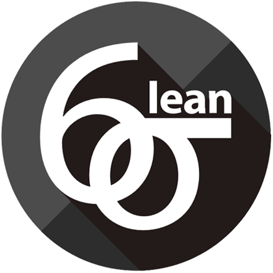
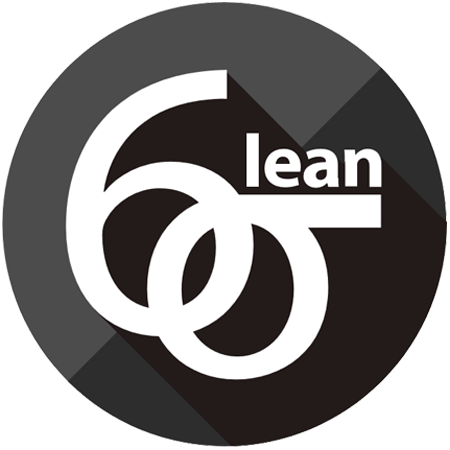

#React
A project practicing the fundamentals of React, e.g. components state, props, stateless functional components and lifecycle methods.
 

I´ve spent 6+ years working in different roles as an Agile Specialist, and is a certified Lean Six Sigma Black Belt. Even though I also know my fair share of martial arts, Black Belts are experts in Lean Six Sigma methodologies and dedicate their time to implementing company improvements and leading key projects. These days my time is spent studying and coding to achieve my goal to become a front-end developer. I started my learning path with a deep dive into JavaScript and later complemented this with the library React. Out of office you will find me dreaming of turning my home into a green oasis or talking the family out for a forest barbeque.
I am a junior eager to learn front-end developer and my language of choice is JavaScript. In addition to technical courses I like to read relevant subject matter books, last month I finished The Pragmatic Programmer, by Hunt & Thomas, currently in my Kindle is Code: The Hidden Language of Computer Hardware and Software, by Petzold.
A project practicing the fundamentals of React, e.g. components state, props, stateless functional components and lifecycle methods.
Responsive, multi-device, blog website with layout built in CSS Grids and Flexbox, including custom images, layout, and styling.
I am certified in both Lean six Sigma and scrum methodology. I have found that Scrum and Lean six Sigma can be used simultaneously and be integrated in a very useful way. Scrum has provided me with a very useful process to conduct projects in an efficient way while Lean Six sigma has provided me with a set of strong and useful tools for solving problems. Both methods with the heart in continuous improvements.
What makes my heart tick for agile work is that both Lean Six sigma and Scrum give those who work within the organization empowerment and autonomy. Working in a self-organizing team with a sense of goal and purpose finding new ways to excel and deliver value gives me great joy!